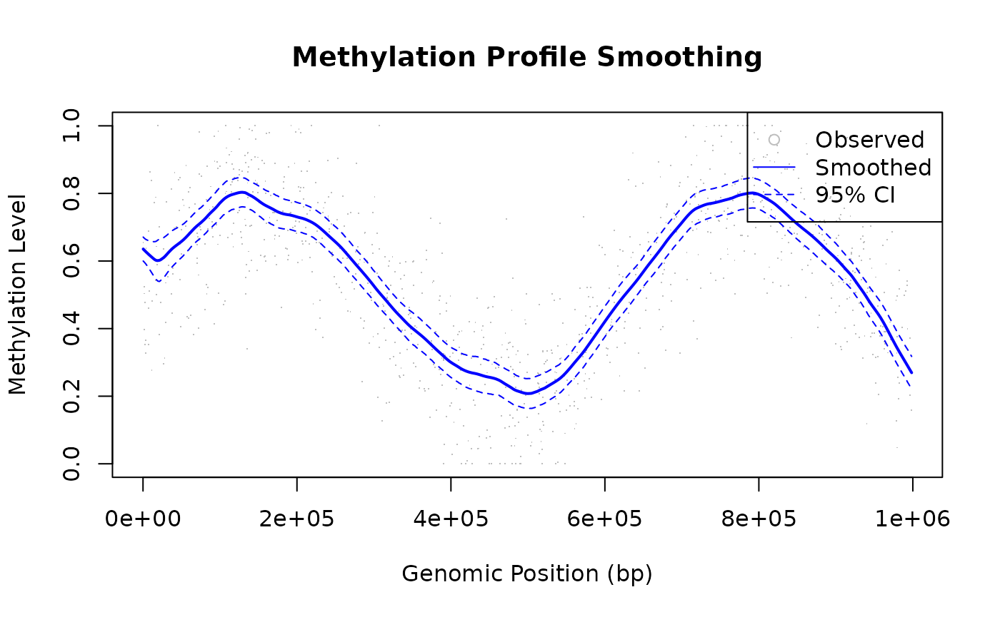

Overview
LOESS is well-suited for genomic data such as DNA methylation profiles, ChIP-seq signals, and expression arrays.
Methylation Profile Smoothing
The Challenge
DNA methylation data (from bisulfite sequencing or arrays) shows position-dependent patterns that can be obscured by measurement noise.
Solution
A small fraction = 0.1 lets LOESS follow fine-scale
spatial structure without smearing the transitions between methylated
and unmethylated regions. confidence_intervals = 0.95
produces uncertainty bands that naturally widen at positions with
sparser CpG coverage, making low-confidence segments immediately
apparent in the plot.
library(rfastloess)
set.seed(42)
n <- 1000
positions <- sort(runif(n, 0, 1e6))
true_meth <- 0.5 + 0.3 * sin(positions / 1e5)
observed <- true_meth + rnorm(n, sd = 0.15)
observed <- pmax(0, pmin(1, observed))
model <- Loess(
fraction = 0.1,
iterations = 3,
confidence_intervals = 0.95
)
result <- fit(model, positions, observed)
plot(positions, observed, pch = ".", col = "gray",
xlab = "Genomic Position (bp)", ylab = "Methylation Level",
main = "Methylation Profile Smoothing")
lines(result$x, result$y, col = "blue", lwd = 2)
lines(result$x, result$confidence_lower, col = "blue", lty = 2)
lines(result$x, result$confidence_upper, col = "blue", lty = 2)
legend("topright", c("Observed", "Smoothed", "95% CI"),
pch = c(1, NA, NA), lty = c(NA, 1, 2),
col = c("gray", "blue", "blue"))
ChIP-seq Signal Smoothing
Application
ChIP-seq experiments produce sparse, noisy coverage data. LOESS can help identify binding regions.
fraction = 0.05 provides high spatial resolution —
important for resolving narrow binding peaks that would otherwise be
smeared into the background. The larger iterations = 5 is
deliberate: Poisson-distributed read counts produce tall, isolated
spikes, and extra robustness iterations progressively down-weight them
so the estimated background level is not inflated by a handful of
extreme counts.
library(rfastloess)
set.seed(123)
positions <- seq(0, 9990, by = 10)
n <- length(positions)
background <- 10
peak1 <- 50 * exp(-((positions - 2000)^2) / (2 * 200^2))
peak2 <- 80 * exp(-((positions - 5000)^2) / (2 * 300^2))
peak3 <- 40 * exp(-((positions - 8000)^2) / (2 * 150^2))
true_signal <- background + peak1 + peak2 + peak3
observed <- rpois(n, true_signal)
model <- Loess(
fraction = 0.05, # Very local smoothing
iterations = 5, # Strong robustness
return_residuals = TRUE
)
result <- fit(model, positions, observed)
# Identify peaks (smoothed signal significantly above background)
threshold <- quantile(result$y, 0.75)
peaks <- positions[result$y > threshold]
cat(sprintf("Found %d peak positions (first 5): %s\n",
length(peaks), toString(head(peaks, 5))))
#> Found 250 peak positions (first 5): 1630, 1640, 1650, 1660, 1670Large Genome Coverage (Streaming)
For whole-genome data that doesn’t fit in memory:
library(rfastloess)
set.seed(42)
positions <- seq(0, 9990, by = 10)
coverage <- rpois(length(positions), 50)
# Process chromosome-by-chromosome or in chunks
model <- StreamingLoess(
fraction = 0.05,
chunk_size = 100000, # 100kb chunks
overlap = 10000, # 10kb overlap
merge_strategy = "weighted_average"
)
process_chunk(model, positions, coverage)
#> <LoessResult>
#> Points: 0
#> Fraction Used: 0.05
#> Iterations Used: 3
result <- finalize(model)
cat("Smoothed y[0]:", result$y[1], "\n")
#> Smoothed y[0]: 56.83401Best Practices for Genomic Data
| Consideration | Recommendation |
|---|---|
| Fraction | 0.05–0.15 (preserve local features) |
| Iterations | 3–5 (handle sequencing outliers) |
| Large data | Use streaming mode |
| Sparse regions | Use boundary_policy = "extend"
|
| Multiple chromosomes | Process separately or ensure sorted |
See Also
-
vignette("concepts", package = "rfastloess")— How LOESS works -
?Loess— All options -
vignette("robustness", package = "rfastloess")— Outlier downweighting in depth -
vignette("merge", package = "rfastloess")— Streaming chunk reconciliation -
vignette("boundary", package = "rfastloess")— Edge handling for sparse regions -
vignette("use-case-real-time", package = "rfastloess")— For sequencing runs
sessionInfo()
#> R version 4.6.1 (2026-06-24)
#> Platform: x86_64-pc-linux-gnu
#> Running under: Ubuntu 24.04.4 LTS
#>
#> Matrix products: default
#> BLAS: /usr/lib/x86_64-linux-gnu/openblas-pthread/libblas.so.3
#> LAPACK: /usr/lib/x86_64-linux-gnu/openblas-pthread/libopenblasp-r0.3.26.so; LAPACK version 3.12.0
#>
#> locale:
#> [1] LC_CTYPE=C.UTF-8 LC_NUMERIC=C LC_TIME=C.UTF-8
#> [4] LC_COLLATE=C.UTF-8 LC_MONETARY=C.UTF-8 LC_MESSAGES=C.UTF-8
#> [7] LC_PAPER=C.UTF-8 LC_NAME=C LC_ADDRESS=C
#> [10] LC_TELEPHONE=C LC_MEASUREMENT=C.UTF-8 LC_IDENTIFICATION=C
#>
#> time zone: UTC
#> tzcode source: system (glibc)
#>
#> attached base packages:
#> [1] stats graphics grDevices utils datasets methods base
#>
#> other attached packages:
#> [1] rfastloess_2.0.0
#>
#> loaded via a namespace (and not attached):
#> [1] digest_0.6.39 desc_1.4.3 R6_2.6.1 fastmap_1.2.0
#> [5] xfun_0.60 cachem_1.1.0 knitr_1.51 htmltools_0.5.9
#> [9] rmarkdown_2.32 lifecycle_1.0.5 cli_3.6.6 sass_0.4.10
#> [13] pkgdown_2.2.1 textshaping_1.0.5 jquerylib_0.1.4 systemfonts_1.3.2
#> [17] compiler_4.6.1 tools_4.6.1 ragg_1.5.2 bslib_0.12.0
#> [21] evaluate_1.0.5 yaml_2.3.12 otel_0.2.0 jsonlite_2.0.0
#> [25] rlang_1.3.0 fs_2.1.0 htmlwidgets_1.6.4